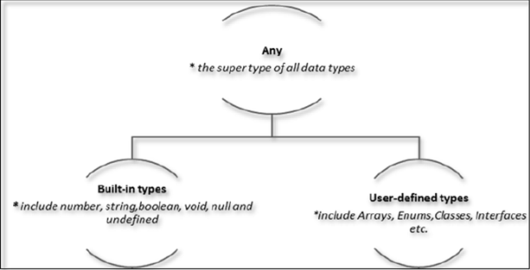

Recap Session 1
- Evolution of Web - Scripting languages
- History of ECMA Script Standarization
- Why Typescript
- Environment setup
- Basic syntax - Identifiers, Keywords, Statements
- TypeScript - Types, Variables
Agenda
- 🔐 ECMA Script Standarization
- 🔐 Types in TypeScript
- 🔐 Built-in Type - Numbers
- 🔐 Built-in Type - String
- 🔐 Union
- 🔐 User defined Type - Tuples
- 🔐 User defined Type - Arrays
- 🔐 Demo Time
ECMA Script Standarization
- let & Constants
- Template Strings
- Fat arrow functions
- Default function arguments
- Spread operator
- Array helpers ( foreach, map, filter, reduce, every and some, reduce, for..of)
let
'let' is similar to 'var' but has scope. let is only accessible in the block level it is defined
if (true) {let a = 40; console.log(a);}
console.log(a);
let a = 50; let b = 100;
if (true) { let a = 60;var c = 10;console.log(a/c); console.log(b/c); }
console.log(c); console.log(a);
const
'Const' is used to assign a constant value to the variable. And the value cannot be changed. Its fixed.
const a = 50;
a = 60;
const b = "Constant variable";
b = "Assigning new value";
const LANGUAGES = ['Js', 'Ruby', 'Python', 'Go'];
LANGUAGES = "Javascript";
LANGUAGES.push('Java');
console.log(LANGUAGES);
String Interpolation
Intuitive expression interpolation for single-line and multi-line strings.
var customer = { name: "Foo" }
var card = { amount: 7, product: "Bar", unitprice: 42 }
var message = "Hello " + customer.name + ",\n" +
"want to buy " + card.amount + " " + card.product + " for\n" +
"a total of " + (card.amount * card.unitprice) + " bucks?";
Arrow function
function oldOne() { console.log("Hello World..!");} var newOne = () => {console.log("Hello World..!");}
var newOne = () - The first part is just declaring a variable and assigning the function (i.e) () to it. It just says the variable is actually a function.
=> {} - Then the second part is declaring the body part of the function. The arrow part with the curly braces defines the body part.
Default Parameters
Default parameters are parameters which are given by default while declaring a function. But it’s value can be changed when calling the function.
let Func = (a, b = 10) => { return a + b; }
Func(20);
Func(20, 50);
Spread attribute
Spread attributes help to spread the expression as the name suggests. In simple words, it converts a list of elements to an array and vice versa.
Types in TypeScript
Any Type
- any data type is super type of all types in TypeScript
- It denotes a dynamic type
- Use of any type is equivalent to opting out of type checking for a variable
Built-in types
- Number - number - Represent both integers and fractions
- String - string - Represent Unicode characters
- Boolean - boolean - Represent logical values
- Void - void - Function return types, non-returning functions
- Null - null - Represents object value
- Undefined - undefined - Value given, uninitialized variables
- Note There is no integer type in TypeScript
Null and undefined - Are they same?
The null and undefined cannot be used to reference the data type of a variable. They can only be assigned as values to a variable
However, null and undefined are not the same. A variable initialized with undefined means that variable has no value or object assigned to it.
While null means that the variable has been set to an object whose value is undefined
User-defined Types
User-defined types include Enumerations (enums), classes, interfaces, arrays and tuple.
Built-in Type - Numbers
- TypeScript supports numberic values as Number objects
- A number object converts numeric literal to an instance of the number class
- The number class acts as a wrapper and enables manipulations of numeric literals
- Syntax var new_number: number = new Number(value);
Properties & Descriptions
- MAX_VALUE - Largest possible number
- MIN_VALUE - The smallest possible number
- NaN - Equal to a value that is not a number
- NEGATIVE_INFINITY - A value less than MIN_VALUE
- POSITIVE_INFINITY - A value greater than MAX_VALUE
- constructor - Returns the object instance which is default number object
Examples
console.log("Maximum value that a number variable can hold: " + Number.MAX_VALUE);
console.log("The least value that a number variable can hold: " + Number.MIN_VALUE);
console.log("Value of Negative Infinity: " + Number.NEGATIVE_INFINITY);
console.log("Value of Negative Infinity:" + Number.POSITIVE_INFINITY);
Number Methods
- toFixed() - Formats a number with a specific number of digits to the right of the decimal
- toPrecision() - Defined how many total digits to display of a number. Negative precisions will throw error
- toString() - Returns string representation of the number value. The base radix is passed between 2 and 36
- valueOf() - Returns numbers primitive value
- toExponential(), toLocaleString()
Examples - toFixed
var num1 = new Number(177.234);
console.log("num1.toFixed() is "+num1.toFixed())
console.log("num1.toFixed(2) is "+num1.toFixed(2))
console.log("num1.toFixed(6) is "+num1.toFixed(6))
Examples - toPrecision
var num2 = new Number(7.123456);
console.log(num2.toPrecision());
console.log(num2.toPrecision(1));
console.log(num2.toPrecision(2));
Examples - toString
var num3 = new Number(10);
console.log(num3.toString());
console.log(num3.toString(2));
console.log(num3.toString(8));
Examples - valueOf
var num4 = new Number(10);
console.log(num4.valueOf());
Built-in Type - Strings
- String objects let you work with a series of characters
- It wraps the string primitive data type with a number of helper methods
- Syntax var var_name: string = new String(string);
Properties & Descriptions
- Constructor - Returns a reference to the String function that created the object.
- Length - Returns the length of the string.
- Prototype - The prototype property allows you to add properties and methods to an object.
Examples
-
var str = new String( "This is string" );
console.log("str.constructor is:" + str.constructor) -
var uname = new String("Hello World");
console.log(uname);
console.log("Length "+uname.length);
Number Methods
- charAt() - Returns the character at the specified index.
- concat() - Combines the text of two strings and returns a new string.
- indexOf() - Returns the index within the calling String object of the first occurrence of the specified value, or -1 if not found.
Number Methods Cont
- slice() - Extracts a section of a string and returns a new string.
- split() - Splits a String object into an array of strings by separating the string into substrings.
- substr() - Returns the characters in a string beginning at the specified location through the specified number of characters.
- substring() - Returns the characters in a string between two indexes into the string.
Number Methods Cont
- toLowerCase() - Returns the calling string value converted to lower case.
- toString() - Returns a string representing the specified object.
- toUpperCase() - Returns the calling string value converted to uppercase.
- valueOf() - Returns the primitive value of the specified object.
- search(), charCodeAt(), lastIndexOf(), match(), localeCompare(), replace(), toLocaleLowerCase(), toLocaleUpperCase(), localeCompare(),
Examples - charAt
var str = new String("This is string");
console.log("str.charAt(0) is:" + str.charAt(0));
console.log("str.charAt(1) is:" + str.charAt(1));
console.log("str.charAt(2) is:" + str.charAt(2));
Examples - concat
var str1 = new String( "This is string one" );
var str2 = new String( "This is string two" );
var str3 = str1.concat( str2 );
console.log("str1 + str2 : "+str3)
Examples - indexOf
var str1 = new String( "This is string one" );
var index = str1.indexOf( "string" );
console.log("indexOf found String :" + index );
var index = str1.indexOf( "one" );
console.log("indexOf found String :" + index );
Examples - slice
var str = new String("Apples are round, and apples are juicy.");
var sliced = str.slice(3, -2);
console.log(sliced);
Examples - split
var str = "Apples are round, and apples are juicy.";
var splitted = str.split(" ", 3);
console.log(splitted)
Examples - substr
var str: string = "Apples are round, and apples are juicy.";
console.log("(1,2): " + str.substr(1,2));
console.log("(-2,2): " + str.substr(-2,2));
console.log("(1): " + str.substr(1));
Examples - substring
var str: string = "Apples are round, and apples are juicy.";
console.log("(1,2): " + str.substring(1,2));
console.log("(0,10): " + str.substring(0, 10));
console.log("(5): " + str.substring(5));
Examples - toLowerCase
var str: string = "Apples are round, and Apples are Juicy.";
console.log(str.toLowerCase( ))
Examples - toString
var str = "Apples are round, and Apples are Juicy.";
console.log(str.toString( ));
Examples - toUpperCase
var str = "Apples are round, and Apples are Juicy.";
console.log(str.toUpperCase( ));
Examples - valueOf
var str = new String("Hello world");
console.log(str.valueOf( ));
Union
- TypeScript 1.4 gives programs the ability to combine one or two types. Union types are a powerful way to express a value that can be one of the several types.
- Two or more data types are combined using the pipe symbol (|) to denote a Union Type.
- Syntax Type1|Type2|Type3
Tuples
- At times, there might be a need to store a collection of values of varied types.
- Arrays will not serve this purpose. TypeScript gives us a data type called tuple that helps to achieve such a purpose.
- Syntax var tuple_name = [value1,value2,value3,…value n];
- Simple Tuple, Empty Tuple, Tuple Operation, Updating Tuple, Destructuring Tuple
Arrays
- A variable declaration can only contain a single at a time.
- Hence, the use of variables is not feasible when one needs to store a larger collection of values.
- Variables in a program are allocated memory in random order, thereby making it difficult to retrieve/read the values
- Syntax var array_name[:datatype] = [val1, val2, valn ..];
Advantage of Arrays
- An array declaration allocates sequential memory blocks.
- Arrays are static.
- Each memory block represents an array element
- Array elements are identified by a unique integer/ index of the element.
- Array element values can be updated or modified but cannot be deleted.
Array Methods
- concat() - Returns a new array comprised of this array joined with other array(s)
- every() - Returns true if every element in this array satisfies the provided testing function.
- filter() - Creates a new array with all of the elements of this array for which the provided filtering function returns true.
Array Methods Cont
- forEach() - Calls a function for each element in the array.
- indexOf() - Returns the first (least) index of an element within the array equal to the specified value, or -1 if none is found.
- join() - Joins all elements of an array into a string.
- map() - Creates a new array with the results of calling a provided function on every element in this array.
Array Methods Cont
- pop() - Removes the last element from an array and returns that element.
- push() - Adds one or more elements to the end of an array and returns the new length of the array.
- reduce() - Apply a function simultaneously against two values of the array (from left-to-right) as to reduce it to a single value.
- reverse() - Reverses the order of the elements of an array -- the first becomes the last, and the last becomes the first.
- some() -Returns true if at least one element in this array satisfies the provided testing function.
- sort(), splice(), toString(), slice(), shift()
Demo Time!

Hello World program write and Execute in JavaScript
❓ Questions ❔
Take Home Questiosn
- List compiler flags?